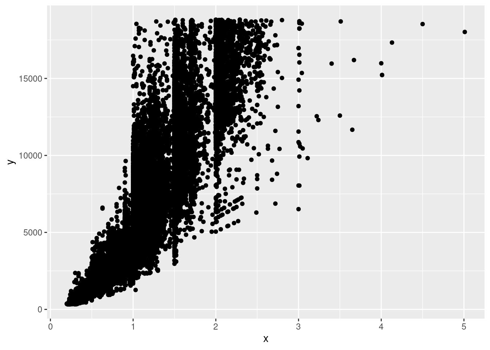
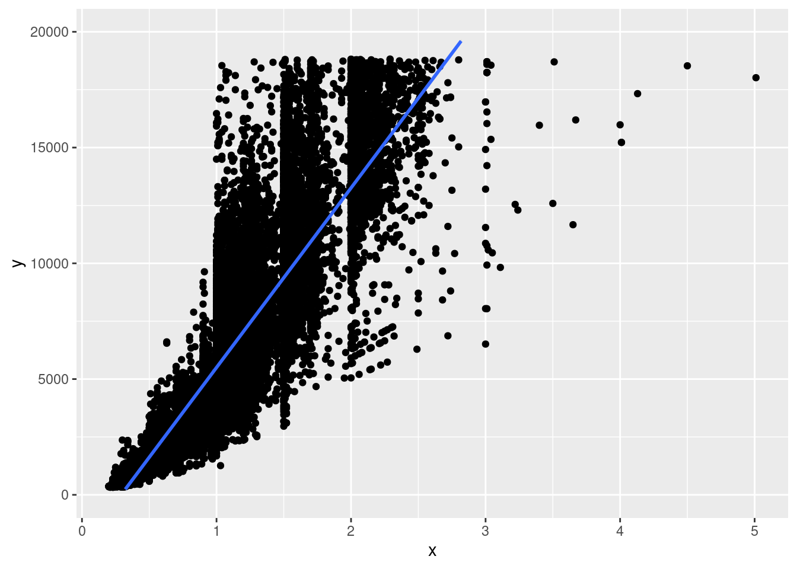

11 Statistik Grundlagen
Unser R-Intensivkurs behandelt einige Themenbereiche der Statistik. Damit ihr sie euch nochmal ins Gedächtnis rufen könnt, gibt es hier eine Übersicht für euch.
11.1 Skalenniveaus
Es gibt verschiedene Skalenniveaus, die uns Auskunft darüber geben welchen Informationsgehalt unsere Variablen haben. Anhand der Skalenniveaus können wir entscheiden welche statistischen Operationen mit einer Variable möglich sind.1
| Skala | Subskala | Eigenschaften | Beispiele |
|---|---|---|---|
| Nominal | - | Klassifikation, Kategorie | Geschlecht, Automarke, Stadt |
| Ordinal | - | Rangordnung | Schulnote, Bildungsstand |
| Metrisch | Intervall | Rangordnung und Abstände | Temperatur in Celsisus, IQ |
| Metrisch | Ratio | Rangordnung, Abstände, und natürlicher Nullpunkt | Gehalt, Gewicht |
| Metrisch | Absolut | Rangordnung, Abstände, natürlicher Nullpunkt, und natürliche Einheit | Anzahl Fachsemester |
11.2 Häufigkeiten und Verteilungen
Absolute und Relative Häufigkeiten
- Die absolute Häufigkeit ist die Anzahl (= ganze Zahl) wie oft ein Merkmal in einer Stichprobe vorkommt.
- Die relative Häufigkeit hingegen ist der Anteil der Fälle, in denen ein Merkmal in einer Stichprobe auftritt.
Verteilungen
Verteilungen betrachten wir in der deskriptiven Statistik in Form von Häufigkeitsverteilungen. Die Schiefe und die Wölbung geben uns Auskunft darüber inwiefern die Verteilung von Variablen von der Normalverteilung abweichen. 2
Schiefe
Die Schiefe (skewness) trifft Aussagen zur Verteilungskurve einer Variable.
Interpretation der Schiefewerte:
| Wert | Bedeutung | Interpretation |
|---|---|---|
| \(<\) 0 | linksschief | Die Verteilung ist nach links gestreckt, und der Großteil der Ausprägungen konzentriert sich auf der rechten Seite |
| \(>\) 0 | rechtsschief | Die Verteilung ist nach rechts gestreckt, und der Großteil der Ausprägungen konzentriert sich auf der linken Seite |
| 0 | symmetrisch | Die Daten sind symmetrisch und gleichmäßig um den Mittelwert verteilt |
Wölbung
Die Wölbung (kurtosis) misst wie spitz bzw. flach die Verteilung einer Variable ist.
Interpretation der Kurtosis-Werte:
| Wert | Bedeutung | Interpretation |
|---|---|---|
| \(<\) 3 | flachgifplig | Die Verteilung ist gestaucht und wirken deshalb flacher |
| \(>\) 3 | spitzgipflig | Die Verteilung hat eine ausgeprägerte Spitze im Vergleich zu einer Normalverteilung |
| 3 | normalgipflig | Die Verteilung folgt einer Normalverteilung |
11.3 Deskriptive Statistik
Die deskriptive Statistik ist ein grundlegendes Werkzeug für die empirische Forschung. Wenn wir mit Datensätzen arbeiten, kann es schwierig sein, Muster, Trends oder wichtige Merkmale nur anhand der Rohdaten zu erkennen. Deskriptive Statistiken helfen uns die Daten auf leicht verständliche Weise zu bündeln und zu verstehen.3
Lageparameter
Lageparameter geben die zentrale Tendenz einer Variable an. Beispiele sind arithmetische Mittel, Median oder Modus.4
| Lageparameter | Beschreibung | Skalenniveau |
|---|---|---|
| Arithmetisches Mittel | Summe der Werte einer Variable, geteilt durch die Anzahl an Werten | Metrisch |
| Median | Wert der genau in der Mitte liegt, wenn die Werte einer Variable aufsteigend sortiert sind | Metrisch, Ordinal |
| Quartile | 1.Quartile = Wert unter den 25% der Daten Fallen; 2. Quartile = Median; 3.Quartile = Wert unter den 75% der Daten fallen | Metrisch, Ordinal |
| Modus | Wert(e) einer Variable mit häufigstem Auftreten | Metrisch, Ordinal, Nominal |
Streuungsmaße
Streuungsmaße geben an wie sehr unsere Daten streuen. Die Streuung kann dabei auf ein Lageparameter bezogen sein, z.B. bei der Varianz oder Standardabweichung, oder auch auf die Breite der Streuung aller Daten, z.B Spannweite oder Interquartilabstand.5
| Streungsmaße | Beschreibung | Lageparameter |
|---|---|---|
| Maximum | Maximum ist der größte Wert einer Variable | - |
| Minimum | Minimum ist der kleinste Werte einer Variable | - |
| Spannweit | Die Spannweite ist die Differenz zwischen dem Maximum und dem Minimum | - |
| Varianz | Quadrierte Abweichung vom arithmetischen Mittel (schwer interpretierbar) | arithmetisches Mittel |
| Standardabweichung | Wurzel aus der Varianz (leichter interpretierbar) | arithmetisches Mittel |
| Interquantilabstand | Differenz aus 3. und 1. Quartile | Median |
Zusammenhangsmaße
Mit Zusammenhangsmaßen können wir untersuchen wie stark zwei Variablen sich gegenseitig beieinflussen (zusammenhängen). Je nach Skalenniveau der betrachteten Variablen wählen wir unterschiedliche Verfahren.6
| Skalennivau | (Dichotom) | Nominal | Ordinal | Metrisch |
|---|---|---|---|---|
| (Dichotom) | Phi-Koeffizient | Cramers V, Kontingenzkoeffizienten | Biserialer Rangkorrelationskoeffizient | Punktbiseriale Korrel. tetrachorischr o. biseriale Korrelation |
| Nominal | Cramers V, Kontingenzkoeffizienten | Cramers V, Kontingenzkoeffizienten | – | Eta |
| Ordinal | Kontingenzkoeffizient, Cramers V | Kontingenzkoeffizient, Cramers V | Spearman-Rangkorrelation, Kendalls Tau, Gamma | – |
| Metrisch | Kontingenzkoeffizient, Cramers V | Kontingenzkoeffizient, Cramers V | Spearman-Rangkorrelation, Kendalls Tau, Gamma | Korrelationskoeffizient n. Pearson, Produkt-Moment-Korrelation |
11.4 Induktive Statistik 7
11.4.1 Grundlagen der induktiven Statistik
Induktive Statistik, wofür?
Das Problem in der Statistik ist oft, dass Aussagen über Grundgesamtheiten, z.B (Gesamte Bevölkerung eines Landes, Alle Mitglieder einer Firma) getroffen werden sollen. Allerdings ist das aus Kosten- und Aufwandgründen nicht realisierbar. Daher werden Stichproben aus der Gesamtheit gezogen. Die Frage ist jetzt, ob sich die Merkmale die in der Stichprobe erhoben auch auf die Grundgesamtheit übertragen lassen. Daher auch der Name “induktiv”, da man hier vom Speziellen auf das Allgemeine schließt anders als bei der Deduktion bei der vom Allgemeinen auf das Spezielle geschlossen wird.
Das Problem ist, dass Aussagen, welche aus induktiven Schlüsse herrühren, nicht immer zu 100 Prozent mit der Wirklichkeit übereinstimmen. Es gibt immer eine Restunsicherheit. Und um diese zu Beschreiben gibt es die Induktive Statistik
Wichtige Begriffe
Grundgesamtheit: Die zu untersuchende Zielgruppe, z.B. alle Studenten der Uni Leipzig
Stichprobe: Eine meist zufällig gezogene Teilmenge aus der Grundgesamtheit z.B. alle Erstsemestler
statistischer Kennwert: Wert der ein Merkmal in irgendeiner Form zusammenfasst
Beispiele:
- Mittelwert
- Varianz
- Standardabweichung (Siehe dazu Teil deskriptive Statistik)
11.5 Hypothesentests
Um mit unseren Daten allgemein gültige Aussagen über die Grungesamtheit treffen zu können brauchen wir Hypothesentests.
Solche Hypothesentests können verschiedene Forschungsfragen zugrunde liegen, z.B.
- Unterscheiden sich Populationsmittel eines Merkmals zwischen zwei Populatione?
- Sind die Ausprägungen eines Merkmals auf eine bestimmte Weise verteilt?
- Sind zwei Merkmale voneinander unabhängig?
Die allgemein am meisten genutze Form des statistischen Hypothesentests ist der Signifikanztest. Diese sind immer gleich aufgebaut.
Zuerst gibt es die Alternativhypothese \(H_a\). Das ist diejenige, von der wir hoffen, sie mit den Daten nachweisen zu können. Ihr gegenüber steht die Null-Hypothese \(H_0\), von der wir hoffen, dass sie sich anhand der Daten als statistisch unplausibel herausstellt und wir sie ablehnen können. Die zu untersuchende Hypothese bestimmt dabei die Auswahl des statistischen Testverfahrens. Nachfolgend werden anhand von Beispielen verschiedene Testverfahren erläutert.
11.5.1 t-Tests
T-Tests sind die am häufigsten verwendeten statistischen Tests, wenn es darum geht mit Stichproben zu arbeiten. Sie bieten sich gut an um metrische Variablen zu vergleichen.
11.5.1.1 Einstichproben t-Test
Beispiel:
In einer Umfrage wurden 200 zufällig ausgewählte Studenten aus der UNI Leipzig zu ihrer persönlichen Zufriedenheit befragt und aus den gegebenen Antworten wurden pro Person (zeilenweise) ein Summenscore gebildet. Der Mittelwert des Summenscores der Stichprobe beträgt \(\bar x = 208\) mit einer Standardabweichung von \(s = 30\). Es ist bekannt, dass der durchschnittliche Wert für die Gesammtpopulation aller Studenten bei \(\mu = 150\) liegt, die Frage ist jetzt, weicht unserer Stichprobenmittel signifikant vom Populationsmittel ab? Dazu formulieren wir folgende Hypothese: Studenten der Uni Leipzig weichen signifikant von Studenten anderer Universitäten in ihren Zufriedenheitswerten ab. Daraus resultieren zwei statistische Hypothesen, welche die zwei Ausgänge eines Hypothesentests sind.
Zum einen die Nullhypothese:
\(H_0: \mu = \mu_0\)
Übersetzt bedeutet das, wir vermuten nach dieser Hypothese, dass unser Stichprobenmittelwert \(\mu (= \bar x)\) mit dem Mittelwert der Population \(\mu_0\) übereinstimmt. Das klingt jetzt erstmal verwirrend, da das ja unserer Forschungsfrage entgegengesetzt ist. Aber genau das ist, was die Nullhypothese machen soll, da sie ja am Ende verworfen werden soll. Die Alternativhypothese dazu ist entsprechend:
\(H_a: \mu \neq \mu_0\)
Für jedes ausgewählte Testverfahren müssen bestimmte Voraussetzungen geprüft werden. Bevor ein Einstichproben t-Test durchgeführt werden kann, muss die abhängige Variable also die Zufriedenheitswerte auf Normalverteilung geprüft werden. Dies kann durch einen Shapiro-Test geklärt werden. Dafür wird der Vektor mit den Zufriedenheitswerten der Studenten verwendet.
Die statistischen Hypothesen für diesen Test lauten:
\(H_0:\) Daten sind normalverteilt
\(H_a:\) Daten sind nicht normalverteilt
Hier ist also das Ziel ein nicht signifikantes Testergebnis zu erhalten
set.seed(6)
stichprobe <- rnorm(200, 208, 30) #erstellung einer zufälligen Verteilung von 200 Werten mit dem Mittelwert 208 und einer standardabweichung von 30
shapiro.test(stichprobe)
Shapiro-Wilk normality test
data: stichprobe
W = 0.99478, p-value = 0.7174Hier gilt es auf den berechneten p-Wert zu achten. Ist dieser über 0.05 können wir annehmen, dass die zugrunde liegenden zufriedenheitswerte normalverteilt sind. Heißt also der t-Test kann angewendet werden.
Dafür gibt es in R den Befehl \(\texttt{t.test()}\)
t.test(stichprobe, mu = 150) #mit dem mu-Argument wird der wahre Wert des Mittelwerts festgelegt
One Sample t-test
data: stichprobe
t = 27.333, df = 199, p-value < 2.2e-16
alternative hypothesis: true mean is not equal to 150
95 percent confidence interval:
202.4357 210.5902
sample estimates:
mean of x
206.513 auch hier ist wieder der p-Wert wichtig. Liegt dieser unter 0.05 können wir zu einem Signifikanzniveau von 5 % feststellen, dass der Mittelwert der Stichprobe tatsächlich vom wahren Mittelwert 150 abweicht. Da der p-Wert hier auch noch deutlich geringer ausfällt (\(2.2e-16 = 2.2 * 10^-16\)), können wir dies sogar für ein noch niedrigeres Signifikanzniveau feststellen. Für die p Werte gilt im Allgemeinen
| Symbol | p-Wert | Bedeutung |
| * | < 0.05 | signifikant |
| ** | < 0.01 | sehr signifikant | *** | < 0.001 | hoch signifikant |
11.5.1.2 Zweistichproben t-Test
Beispiel
Zusätzlich zu der Stichprobe an der Uni Leipzig, wurde noch eine weitere Erhebung mit 200 Personen an der Uni Halle durchgeführt. Der Durchschnitt lag hier bei 180 und die Standardabweichung bei 55. Es soll jetzt festgestellt werden, ob die´zwei Stichproben sich signifikant voneinander unterscheiden. Dazu wird ein Zweistichproben t-Test verwendet.
Dazu müssen allerdings auch die Voraussetzungen erfüllt sein, dass beide Stichproben normalverteilt sind…
shapiro.test(stichprobe2)
Shapiro-Wilk normality test
data: stichprobe2
W = 0.99666, p-value = 0.9456…sowie dass beide Stichproben die gleiche Varianz haben. Dies kann mithilfe des \(\texttt{var.test()}\)-Befehls überprüft werden.
var.test(stichprobe,stichprobe2)
F test to compare two variances
data: stichprobe and stichprobe2
F = 0.29927, num df = 199, denom df = 199, p-value <
2.2e-16
alternative hypothesis: true ratio of variances is not equal to 1
95 percent confidence interval:
0.2264854 0.3954516
sample estimates:
ratio of variances
0.2992725 Bei diesem Test ist die Nullhypothese, dass die Varianzen gleich sind. Also
\(H_0: \sigma^2_1 = \sigma^2_2\)
\(H_a: \sigma^2_1 \neq \sigma^2_2\)
Auch hier ist ein nicht signifikantes Ergebnis erwünscht.
Da also die Bedingung nicht erfüllt ist, muss bei der Berechnung des t-Tests noch eine Einstellung geändert werden. Der Befehl bleibt aber gleich, nur, dass jetzt beide Stichproben in den Befehl eingefügt werden.
t.test(stichprobe,stichprobe2, var.equal = FALSE)#var.equal auf FALSE zu setzen, sorgt dafür, dass eine abgewandelte Form des t-Tests angewandt wird, der die unterschiedlichen Varianzen einkalkuliert
Welch Two Sample t-test
data: stichprobe and stichprobe2
t = 7.3541, df = 308.32, p-value = 1.746e-12
alternative hypothesis: true difference in means is not equal to 0
95 percent confidence interval:
23.20512 40.15904
sample estimates:
mean of x mean of y
206.5130 174.8309 Aufgrund des sehr niedrigen p-Werts zeigt sich hier, dass die zwei Stichproben sich hochsignifikant voneinander unterscheiden. Zusätzlich gibt es auch noch die Möglichkeit einen t-Test mit gepaarten Stichproben durchzuführen. Das wäre z.B. der Fall, wenn die Umfrage an der Uni Leipzig nochmal mit dem gleichen Personenkreis zu einem späteren Zeitpunkt durchgeführt würde. Dazu muss in der \(\texttt{t.test()}\)-Funktion das Argument \(\texttt{paired}\) auf \(\texttt{TRUE}\) gesetzt werden.
11.5.2 Chi-Quadrat Test
Wenn es darum geht ob eine kategoriale Variable einen Einfluss auf eine andere kategoriale Variable hat, bietet es sich an, das ganze mit einem Chi-Quadrat Test zu überprüfen. Dieser Test kann für folgende Fragestellungen verwendet werden:
(1) folgen die Häufigkeiten einer bestimmten Variablen einer bekannten Verteilung?
(2) beeinflussen sich zwei kategoriale Variablen gegenseitig?
Beispiel:
In einer Umfrage wurden Personen befragt,ob sie sich in ihrem leben glücklich fühlen und zum zweiten, ob sie eine feste Freundesgruppe haben. Es wird vermutet, dass es einen Zusammenhang zwischen diesen beiden Variablen gibt. Die Ergebnisse sehen so aus:
| glücklich | nicht glücklich | ||
| keine feste Freundesgruppe | 13 % | 4.5 % | 17 % |
| feste Freundesgruppe | 61.5 % | 21 % | 82.5 % | 74.5 % | 25.5 % | 100 % |
mit diesen Datens kann dann die Hypothese mithilfe des \(\texttt{chisq.test()}\) überprüft werden
chisq.test(stichprobe3$glck,stichprobe3$frnd)
#>
#> Pearson's Chi-squared test with Yates' continuity
#> correction
#>
#> data: stichprobe3$glck and stichprobe3$frnd
#> X-squared = 0.070178, df = 1, p-value = 0.7911Die Nullhypothese ist bei diesem Test, dass die zwei Variablen unabhängig sind bzw. dass sie sich nicht gegenseitig beeinflussen. Die Alternavhypothese besagt das Gegenteil, also dass sie sich gegenseitig beeinflussen. Da der p-Wert hier deutlich über 0,05 liegt können wir die Nullhypothese nicht ablehnen und müssen davon ausgehen, dass in diesem Fall das Vorhandensein von Freunden keinen Einfluss auf die Glücklichkeit hat.
11.6 lineare Regression
Hinweis: Für lineare Regressionen sind eine vielzahl an Voraussetzungen zu überprüfen:
(1)Es existiert ein linearer Zusammenhang
(2)Erwartungswert der Residuen ist Null
(3)Varianzhomogenität der Residuen (Homoskedastizität)
(4)Die Residuen sind nicht miteinander Korreliert (Autoregression)
(5)Die Residuen sind nicht mit den unabhängigen Variablen korreliert und die unabhängige Variable ist deterministisch(z.B. Omitted-Variable-Bias)
(6)Normalverteilung der Residuen
11.6.1 einfache lineare Regression
Mithilfe der linearen Regression ist es möglich, einen gerichteten Einfluss einer Variablen X auf eine Variable Y nachzuweisen. Es wird dabei ein linearer Zusammenhang angenommen.
Die Grundlegende Form dieses Zusammenhanges ist wie folgt:
\(Y=\alpha+\beta \cdot X +\varepsilon\)
Die Koeffizienten beschreiben dabei:
\(\alpha\) ist der y-Achsenabschnitt, der uns sagt welchen Wert Y hätte, wenn X null wäre
\(\beta\) ist der Anstieg der linearen Regression. Wenn also der X-Wert um eins ansteigt, steigt die Y-Variable um den Wert von \(\beta\)
\(\varepsilon\) ist der Fehlerterm. Da die wenigsten Zusammenhänge im echten Leben perfekt linear sind, zeigen sich in dem Fehlerterm zufällige Einflüsse.
Am besten lässt sich ein solcher Zusammenhang vorstellen wenn man das ganze visuell betrachtet
 Was der Algorithmus hinter der lineare Regression macht, ist eine lineare Funktion für eine Gerade zu finden, die einen möglichst geringen Abstand zu den einzelnen Punkten hat. Etwa so: 
Eine lineare Regression wird in R mit dem Befehl \(\texttt{lm()}\) erstellt wobei das erste Argument eine \(\texttt{formula}\) mit der Struktur \(\texttt{AbhängigeVariable} \sim \texttt{UnabhängigeVariable}\) das erste Argument ist. Hier wird jetzt für den Allbus2018 (allgemeine Bevölkerungsumfrage der Sozialwissenschaften) untersucht, ob das Alter (in Jahre) einen Einfluss auf die allgemeine Zufriedenheit (10 stufige Skala) hat.
Allbus <- readRDS("data/Allbus2018.rds")
output <- lm(Zufriedenheit~Alter,data = Allbus)
summary(output)
#>
#> Call:
#> lm(formula = Zufriedenheit ~ Alter, data = Allbus)
#>
#> Residuals:
#> Min 1Q Median 3Q Max
#> -7.8923 -0.8804 0.1164 1.1124 2.1403
#>
#> Coefficients:
#> Estimate Std. Error t value Pr(>|t|)
#> (Intercept) 7.9218361 0.1471104 53.850 <2e-16 ***
#> Alter -0.0007972 0.0031956 -0.249 0.803
#> ---
#> Signif. codes:
#> 0 '***' 0.001 '**' 0.01 '*' 0.05 '.' 0.1 ' ' 1
#>
#> Residual standard error: 1.532 on 1574 degrees of freedom
#> Multiple R-squared: 3.954e-05, Adjusted R-squared: -0.0005958
#> F-statistic: 0.06224 on 1 and 1574 DF, p-value: 0.803Dem Output können drei wichtige Ergebnisse entnommen werden:
(1) Der F-Test besagt, ob das gesammte Modell signifikant ist (wenn p-Wert >0.05, dann nicht signifikannt)
(2) Bestimmtheitsmaß \(R^2\) beschreibt den Anteil der durch das Gesamtmodell aufgeklärten Varianz (liegt zwischen 0 und 1, wobei 0 bedeutet, dass das Modell keine Erklärungskraft hat und 1, dass das Modell die abhängige Variable perfekt erklärt); wird für die Interpretation in Prozent angegeben.
(3) Koeffizienten (\(\texttt{Estimates}\)) beschreiben den Einfluss der unabhängigen Variable (Alter) auf die abhängige Variable (Zufriedenheitswert).
Interpretation
Der p-Wert der F-Statistik liegt hier mit 0.803 deutlich über dem Signifikanzniveau von 0.05, was bedeutet, dass das gesammte Modell nicht Statistisch signifikant ist.
Dementsprechend klein ist auch das \(R^2\), welches mit $ 3.954^{-5}$ sehr gering ausfällt.
Für die Interpretion der Koeffizienten gilt es zuerst auf die Werte unter \(\texttt{Coefficients}\) in der Spalte \(\texttt{Pr(>|t|)}\) zu schauen. Die Werte hier sind die p-Werte für die jeweiligen Koeffizienten. Um an diese Signifikanzniveaus zu kommen wird automatisch für jeden Koeffizienten ein t-test gerechnet, welcher prüft, ob die Koeffizienten signifikant von Null verschieden sind. Also, ob ausgeschlossen werden kann, dass der berechnente Koeffizient nicht nur zufällig einen Einfluss auf die abhängige Variable zeigt. Generell gilt, je niedriger diese p-Werte, desto besser. Um von einem Signifikanten Koeffizienten zu sprechen, muss der p-Wert zumindest einen Wert von 0.05 unterschreiten. In der Tabelle wird das zusätzlich durch Sterne hinter den p-Werten angezeigt. Die bedeutung ist hier:
Erst wenn einer dieser Fälle eintritt, können die Koeffizienten sinvoll interpretiert werden.
Für diesen Fall können wir sagen, dass der \(\alpha\)-Koeffizient, der hier mit \(\texttt{(Intercept)}\) beschrieben wird, hochsignifikant ist.
Interpretiert wird der Wert, der in der \(Estimate\)-Spalte steht (7.9218361). Übersetzt heißt dieser Wert, das wir für eine Person mit dem Alter null Jahre im Durchschnitt einen Zufriedenswert von \(\approx\) 7.9 haben. Die Interpretation des Intercepts ist aber meistens nicht sinvoll, da Personen, die damit beschrieben werden irrelevant sind.
Interessanter sind die \(\beta\)-Koeffizienten, die neben den jeweiligen Variablen stehen. Für den Koffizient für Alter haben wir hier zwar keine Signifikanz, was bedeutet, dass das Alter keinen Einfluss auf die Zufriedenheit hat. Zur Veranschaulichung würde der Wert hier so interpretiert werden, dass wenn das Alter um ein Jahr steigt (immer um eine Einheit) der Zufriedenheitswert im Durchschnitt um 0.0007972 Punkte sinkt (da negativ).
11.6.2 multiple lineare Regression
Meistens ist es das Ziel nicht nur den Einfluss von einer unabhängigen Variablen auf eine abhängige Variable zu prüfen, sondern festzustellen, ob mehrere Variablen zusammen einen Einfluss auf die abhängige Variable haben. Dementsprechend sieht die neue Formel dann so aus:
\(Y=\alpha+\beta_1 \cdot X_1 + \beta_2 \cdot X_2 +...+ \beta_k \cdot X_k +\varepsilon\)
mit \(k\) ist hier gemeint, dass unendlich viele unabhänige Variablen hinzugezogen werden können.
Die Vorgehensweise ist ähnlich zur einfachen linearen Regression, nur das hier jetzt zusätlich zum Alter auch noch Einkommen (in 100 EUR) und Geschlecht als erklärende Variablen einbezogen werden. Diese werden in der Formel mit einem \(+\) hinzugefügt.
output <- lm(Zufriedenheit~Alter+Einkommen+Geschlecht,data = Allbus)
summary(output)
#>
#> Call:
#> lm(formula = Zufriedenheit ~ Alter + Einkommen + Geschlecht,
#> data = Allbus)
#>
#> Residuals:
#> Min 1Q Median 3Q Max
#> -7.7490 -0.7313 0.1577 1.0315 2.7668
#>
#> Coefficients:
#> Estimate Std. Error t value Pr(>|t|)
#> (Intercept) 7.522119 0.154954 48.544 < 2e-16
#> Alter -0.006036 0.003219 -1.875 0.0609
#> Einkommen 0.022417 0.003086 7.264 5.90e-13
#> Geschlechtweiblich 0.354772 0.081627 4.346 1.47e-05
#>
#> (Intercept) ***
#> Alter .
#> Einkommen ***
#> Geschlechtweiblich ***
#> ---
#> Signif. codes:
#> 0 '***' 0.001 '**' 0.01 '*' 0.05 '.' 0.1 ' ' 1
#>
#> Residual standard error: 1.506 on 1572 degrees of freedom
#> Multiple R-squared: 0.03466, Adjusted R-squared: 0.03282
#> F-statistic: 18.81 on 3 and 1572 DF, p-value: 5.463e-12Zusätlich gilt es bei multiplen linearen Regressionen auch auf den Wert des \(\texttt{Adjusted R-squared}\) zu achten, welches den \(\texttt{R-Squared}\)-Wert korrigiert, um den Effekt von zusätzlichen unabhängigen Variablen auszugleichen. Man kann es zum Vergleich verschiedener Modelle nutzen, aber nur das \(\texttt{R-Squared}\) kann interpretiert werden.
Interpretation
Der p-Wert der F-Statistik liegt für dieses Modell deutlich unter 0.05 und damit ist das gesammte Modell hochsignifikant.
Der Wert von \(\texttt{R-Squared}\) liegt bei 0.03466, was bedeutet, dass die unabhängigen Variablen insgesammt 3.5% Varianz in der abhängigen Variable erklären. Ob diese Varianzaufklärung einen hohen Wert darstellt muss im Vergleich mit der umliegenden Literatur geklärt werden.
Für das Alter zeigt sich auch in diesem Modell keine Signifikanz. Das Einkommen hat dafür einen hochsignifikanten Einfluss auf die Zufriedenheit. Der Wert kann so interpretiert werden, dass wenn das Einkommen um 100 EUR steigt, der Zufriedenheitswert im Durchschnitt und unter Konstanthaltung aller anderer Variablen um \(\approx\) 0.022 Punkte steigt. Bei multiplen Regressionen ist es wichtig, immer dazu zu sagen, dass die restlichen Variablen Konstant gehalten werden (auch genannt ceteris paribus), da dies Vorraussetzung für die Interpretation ist.
Das Geschlecht ist ebenfalls hochsignifikant. Diese Variable ist aber ein Sonderfall, da es sich hier um eine kategoriale Variable handelt. Diese können nicht um einen gewissen Betrag steigen. Daher werden für die Interpretaion eine Ausprägung der Variable (hier: männlich) als Referenzkategorie genommen, auf die sich die restlichen Ausprägungen beziehen. Das erklärt auch warum in der Tabelle \(\texttt{Geschlechtweiblich}\) steht. Es geht hier um den Vergleich von weiblich zur Referenzkategorie männlich. Konkret bedeutet das hier, dass eine weibliche Person im Durchschnitt und unter Konstanthaltung aller anderer Variablen einen 0.35 Punkte höheren Zufriedenheitswert hat als eine männliche Person.
Benning, V. (2022, 02. Dezember). Zusammenhangsmaße verstehen und anwenden + Beispiele. Scribbr. Abgerufen am 27. Juni 2023, von https://www.scribbr.de/statistik/zusammenhangsmasse/↩︎
https://de.statista.com/statistik/lexikon/definition/139/verteilung/↩︎
Benning, V. (2023, 09. Januar). Deskriptive Statistik verstehen und anwenden. Scribbr. Abgerufen am 16. Juni 2023, von https://www.scribbr.de/statistik/deskriptive-statistik/↩︎
Benning, V. (2023, 23. Mai). Die Lageparameter erklärt mit Beispielen. Scribbr. Abgerufen am 14. Juni 2023, von https://www.scribbr.de/statistik/lageparameter/↩︎
Benning, V. (2022, 01. Juni). Die Streuungsmaße einfach erklärt mit Beispielen. Scribbr. Abgerufen am 14. Juni 2023, von https://www.scribbr.de/statistik/streuungsmasse/↩︎
Benning, V. (2022, 02. Dezember). Zusammenhangsmaße verstehen und anwenden + Beispiele. Scribbr. Abgerufen am 27. Juni 2023, von https://www.scribbr.de/statistik/zusammenhangsmasse/, https://wwwhomes.uni-bielefeld.de/fvan_veen/StatistikII%20SS06/Sonstiges/Interpretationshilfe.pdf↩︎
Teile des Kapitels sind den Vorlesungsmaterialien zu “Einführung in die Statistik” von Dr. Stephan Poppe entnommen↩︎